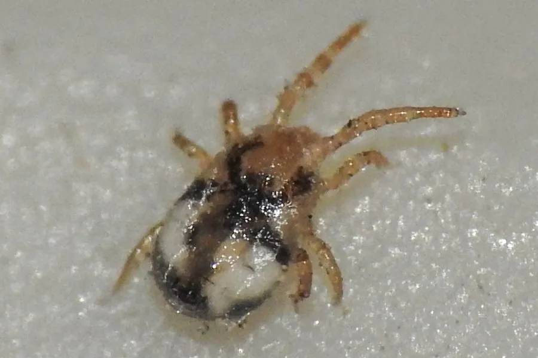

蛛形动物 · 动物界
鸡皮刺螨 Dermanyssus gallinae

危害家禽的小型螨类，白天藏在鸡舍缝隙中，夜间爬到鸡身上吸血，可导致贫血和产蛋下降，也是人畜共患的骚扰性螨。
- 分类
- 门节肢动物门纲蛛形纲目中气门目科皮刺螨科属皮刺螨属
- 栖息环境
- 鸡舍、鸽舍的墙缝、栖架、巢材和灰尘中
- 地理分布
- 全球家禽养殖区，温暖地区尤为常见
- 保护级别
- IUCN 暂无评估；中国未列入国家重点保护名录
物种志
鸡皮刺螨体长仅 0.6–1 mm，未吸血时呈灰白色，吸血后变成鲜红色；身体呈卵圆形，足较长，口器细长，适合刺吸血液。它行动迅速，常成群藏在鸡舍的缝隙、栖架和灰尘中。
鸡皮刺螨分布于全球的家禽养殖场和鸽舍，白天隐藏在缝隙里，夜间爬到鸡、鸽等鸟类身上吸血，每次吸血几分钟到一小时，吸完就离开。严重感染会导致家禽贫血、消瘦、产蛋下降，甚至死亡；它也会叮咬人，引起皮肤瘙痒和红疹。它在温暖季节繁殖很快，一只雌螨可产数十粒卵。防治以清洁鸡舍、封堵缝隙和轮换用药为主，同时要注意药物残留和抗药性问题。目前 IUCN 暂无评估，是重要的畜牧害虫。
形态与习性
- 食性吸食鸡、鸽等鸟类的血液
- 体长0.6–1 mm
- 识别未吸血灰白色，吸血后鲜红色
- 习性白天藏在缝隙，夜间出来吸血
- 危害致家禽贫血、产蛋下降，也叮咬人
- 防治清洁禽舍、封堵缝隙、轮换用药
趣味知识
- 鸡皮刺螨白天躲在墙缝里，夜里才爬到鸡身上吸血。
- 它吸饱血后身体会变成鲜红色，因此也被叫作红螨。
- 严重感染时，鸡会贫血、消瘦，产蛋量明显下降。